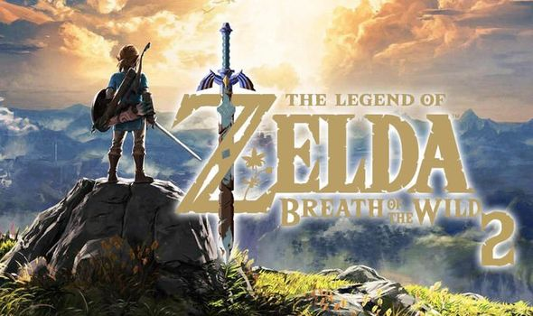
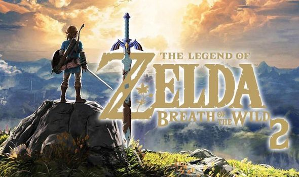

The Legend of Zelda: Breath of the Wild Review

Mini Game Review
The Legend of Zelda: Breath of the Wild Review

Journey to the wild world of Rune Factory and experience the legendary fantasy farming adventure like never before!-Nintendo Switch Online
Zelda has been a cult classic for many people, myself not included. However, BOTW looked too good to pass so I gave it a shot and was not let down. The graphics look magical and were simply breathtaking. There are many mechanics in which you explore, climb mountains or gather herbs. Don't have much to say but it's a phenomenal game. Honestly glad that this was my first Zelda game. Looking forward to BOTW2! 7/10 for me!
Get back to the original website .